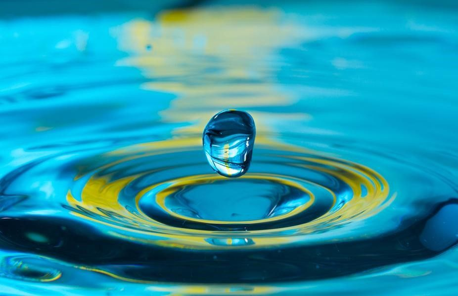
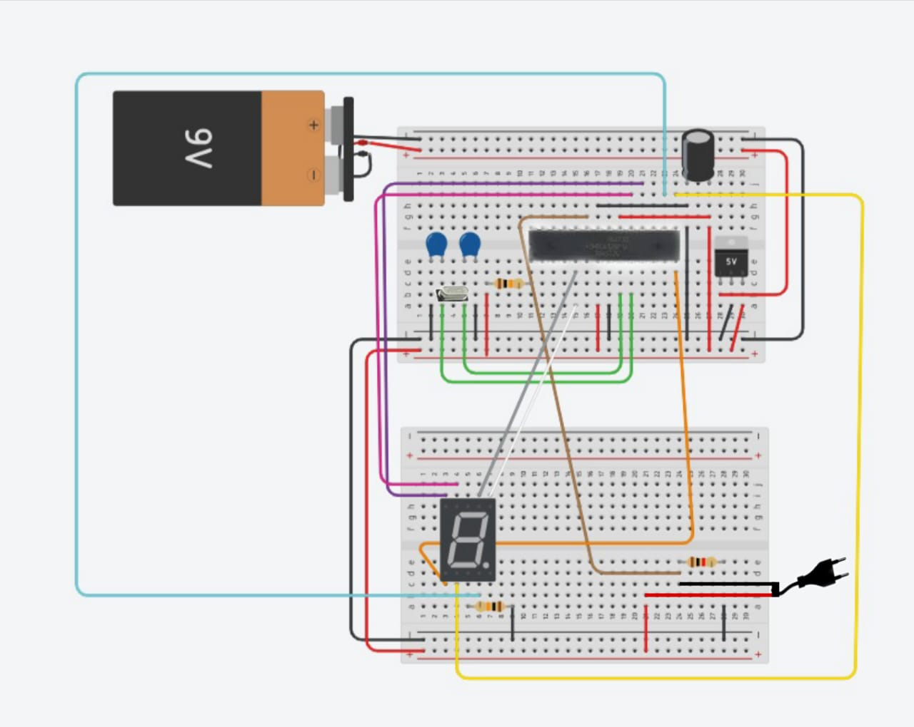
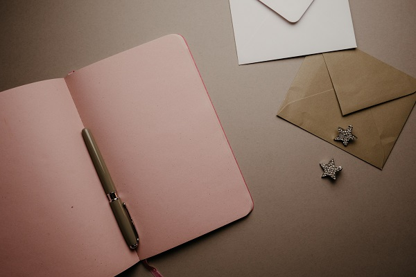
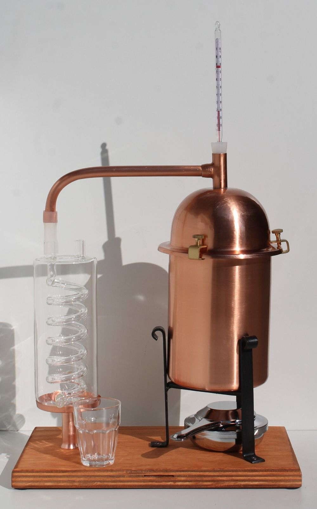
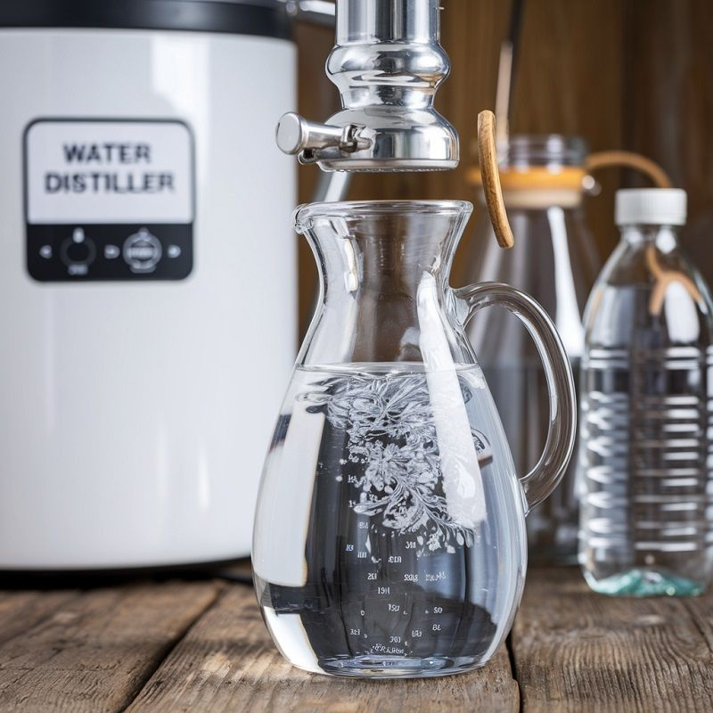
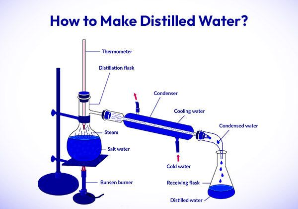

About CONDISTILLERstats
PROJECT DESCRIPTION
Plantopia is an automated greenhouse control system developed to optimize plant growth conditions through real-time monitoring and control. The system addresses challenges in agriculture such as inefficient resource usage and inconsistent environmental conditions.
The prototype integrates multiple sensors, including temperature, humidity, soil moisture, and light sensors, with actuators such as pumps, fans, cooling units, heaters, and lighting systems. These components work together through a programmed control system to maintain optimal conditions.
A key feature of the system is its ability to switch between different plant requirements using a database-based approach. This allows the system to adapt instantly to different crops, improving flexibility and efficiency.
5
ENVIRONMENTAL
PARAMETERS CONTROLLED
2
PLANT TYPES
SUPPORTED
5–10 sec
SYSTEM RESPONSE
SYSTEM RESPONSE
±5%
MEASUREMENT
ACCURACY
PROJECT DEVELOPMENT TIMELINE
2025 – Initial Phase
RESEARCH & PROBLEM IDENTIFICATION
Research focused on agricultural challenges such as inefficient irrigation, environmental instability, and the need for automation in greenhouse systems.
2025 – Design Phase
SYSTEM DESIGN & COMPONENT SELECTION
The system was designed using sensors (DHT11, LDR, soil moisture) and actuators (pump, fan, heater, LED). Threshold values were selected based on plant requirements.
2025 – Assembly Stage
PROTOTYPE CONSTRUCTION
The greenhouse structure was built using PVC pipes, and all sensors and actuators were installed in appropriate positions for accurate measurement and control.
2025 – Circuit Implementation
CONDUCTIVITY system DEVELOPMENT
An Arduino-based control system was programmed to process sensor data and activate actuators based on predefined conditions.
2025 – Experimental Phase
CALIBRATION & TESTING
Sensors were calibrated using laboratory instruments such as a lux meter and thermometer. Multiple tests were conducted to validate system response and accuracy.
2025 – Final Phase
RESULTS & EVALUATION
The system successfully maintained environmental conditions within desired ranges. The response time ranged between 5–10 seconds, confirming system efficiency and reliability.
PortfolioPortfolio
Plantopia is a smart greenhouse system that automatically controls environmental conditions to optimize plant growth.
BlogsBlogs

What is plantopia?
Plantopia is a smart greenhouse system that automatically controls environmental conditions to optimize plant growth.

Why is environmental control important?
Maintaining proper temperature, humidity, soil moisture, and light ensures healthy plant growth and higher productivity.

How does the system work?
Sensors collect real-time data, and the control system activates actuators such as pumps, fans, and lighting based on predefined conditions.

How does the system adapt to different plants?
A switch-based database allows the system to change environmental thresholds depending on the selected crop.

What is the role of automation?
Automation reduces human effort, increases accuracy, and ensures consistent plant care.

What were the final results?
The system successfully maintained stable conditions with a fast response time and high measurement accuracy.
Contact usContact
Contact us
Contact us for further information, inquiries, or academic collaboration regarding this project.
: New Cairo STEM School
Rahama Taha Talal Hanafy
Rahama.3024553@stemnewcairo.moe.edu.eg
Mobile phone: 01552319606
Mariam Mohsen Hanafi Sarhan
Mariam.3024534@stemnewcairo.moe.edu.eg
Mobile phone: 01278478142
Yomna Mohamed Kadry Shaban
Yomna.3024569@stemnewcairo.moe.edu.eg
Mobile phone: 01156679880